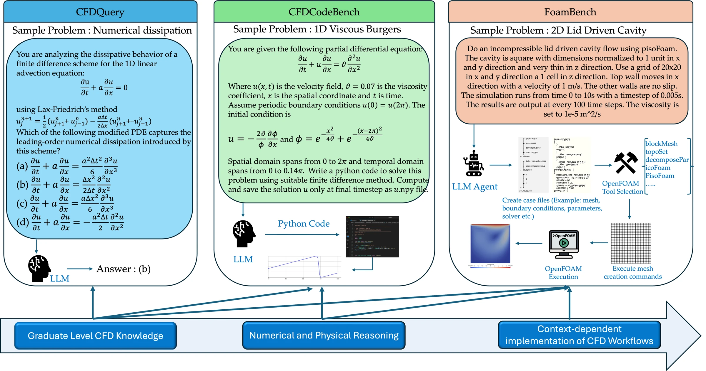
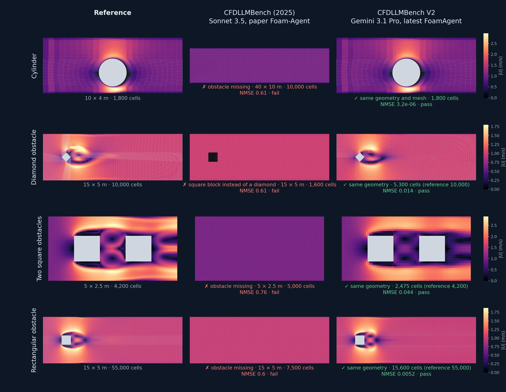

CFDQuery
90questions
Multiple-choice questions on modified equations, stability, dispersion and non-uniform grids.
Success: the share of questions answered correctly.
Benchmark update · October 2026
CFDLLMBench measures how well large language models handle computational fluid dynamics, from graduate-level numerics to setting up and running real OpenFOAM simulations. V2 runs the benchmark on six current models with revised prompts and corrected references, and compares them with the models of the original study.

The benchmark
A CFD engineer needs three things: knowing the numerics, turning a problem statement into a working solver, and setting up a simulation that reproduces the right flow. CFDLLMBench tests each one separately. The scoring is strict: an answer is right or wrong, and code or a simulation only counts if it runs and matches a reference solution.
CFDQuery
90questions
Multiple-choice questions on modified equations, stability, dispersion and non-uniform grids.
Success: the share of questions answered correctly.
CFDCodeBench
24PDE problems
From 1D Burgers to Rayleigh–Bénard convection. The model writes a Python solver in one attempt.
Success: the code runs, NMSE < 0.1 against the reference, and it stays accurate at finer resolution.
FoamBench
126OpenFOAM cases
110 Basic cases in 11 flow families and 16 Advanced cases with new geometries and turbulence models. An agent writes every case file, meshes and runs the solver.
Success: the solver finishes and the final flow field has NMSE < 0.1 against the reference.
Results
2025 models: as published in the CFDLLMBench paper, with that study's prompts, its 28-task CFDCodeBench and its Foam-Agent. On FoamBench they are shown next to the previous Foam-Agent version, which has the same agent design.
Old vs new models
Each dot is one model: grey for the six models of the original study, blue for the six models of V2.
CFDQuery
2025: 59–91% · 2026: 80–86%
Every 2026 model answers between 80% and 86% of the 90 questions. The weaker models caught up, but the top didn't move: no 2026 model beats o3-mini's 91% (82 of 90). Some misses look like answer-key problems. On question 3, all six models pick the option with the correct fourth-order coefficients, while the key marks a different one.
CFDCodeBench
2025 best: 14% · 2026 best: 75%
In 2025 the best model wrote a correct, convergent solver for 14% of the problems. Three 2026 models reach 75% in a single attempt with no error feedback, and every 2026 model writes code that runs on at least 79% of the tasks; what remains is accuracy. The task set was also revised (28 tasks then, 24 now, with explicit output grids), so the jump combines better models with clearer tasks.
FoamBench
Basic: 34% → 77% · Advanced: 25% → 81% (94% with the latest Foam-Agent)
With the same Foam-Agent design, the best 2025 model solved 34% of the Basic cases and the best 2026 model solves 77%. On Advanced the best result rises from 25% to 81%, and to 94% with the latest Foam-Agent. Advanced used to be the harder set and is now the easier one, for two reasons: the revised prompts give the values the reference uses, and the agents now build the right geometry (next section).
The Basic failures that remain are mostly geometry shortcuts (a simplified backward-facing step in pitzDaily, the obstacle left out of the dam break) and steady square-bend runs that stop once converged, before the 500 s at which they are scored.
FoamBench Advanced
The Advanced cases put new obstacles in the flow. In the original study, Sonnet 3.5, the best 2025 model, built none of the four obstacles below: it simulated an empty channel, or a solid square block in place of the diamond. With V2, Gemini 3.1 Pro builds every one. On the cylinder its mesh is identical to the reference; on the other three it uses a coarser mesh, and all four still match the reference within NMSE 0.1.

Data and code
The V2 datasets, reference solutions and evaluation code are in the GitHub repository: CFDQuery, CFDCodeBench and FoamBench.
Temperature 0 wherever the provider allows it. GPT-5.6 Sol and both Gemini models ran at low reasoning effort, and GLM 5.2 and Qwen3.8-27B with thinking off. Codex CLI used GPT-5.6 Sol and Claude Code used Opus 5.5, both at low effort. All simulations use OpenFOAM 10.
@article{somasekharan2025cfdllmbench,
title={{CFDLLMBench}: A Benchmark Suite for Evaluating Large Language Models in Computational Fluid Dynamics},
author={Somasekharan, Nithin and Yue, Ling and Cao, Yadi and Li, Weichao and Emami, Patrick and Bhargav, Pochinapeddi Sai and Acharya, Anurag and Xie, Xingyu and Pan, Shaowu},
journal={Journal of Data-centric Machine Learning Research},
volume={3}, number={13}, pages={1--40}, year={2026},
url={https://openreview.net/forum?id=kTcH1MnkjY}
}